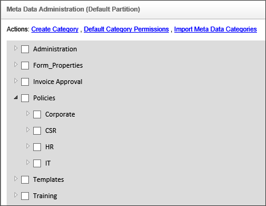
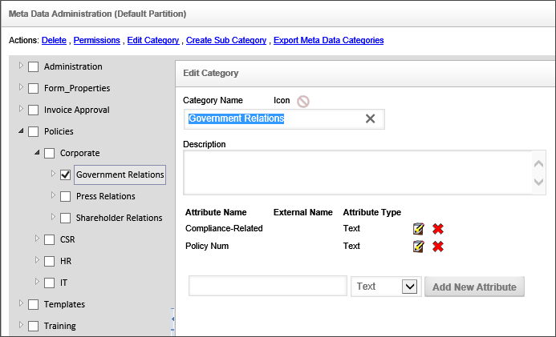
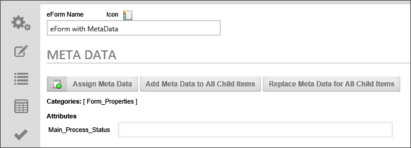
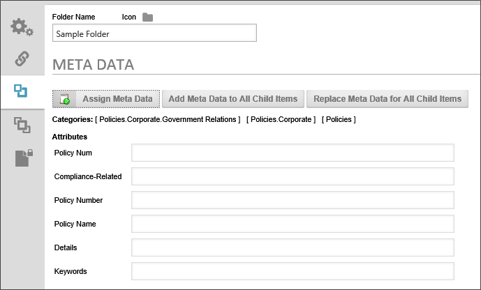
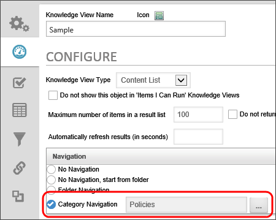
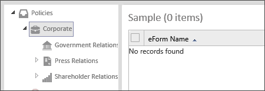

|
|
Lesson Contents | In this Lesson, you will learn how to create Meta Data categories and attributes. |
Knowledge Management is the collection of processes or information that governs the creation, dissemination, and utilization of knowledge. Categorization is a key component to the Knowledge Management features in Process Director.
At the core of Process Director is a management system that contains documents, Forms, images, web pages and scanned image – all of your digital content. This content can be organized by Process Timeline, user, department, or any other approach. Process Director allows this content to be categorized. A classification mechanism provides a powerful, consistent way to categorize content according to how your organization wants to make information available to your community of users.
The first step, and the most important, in classifying your content is to define your category schema (i.e. taxonomy). This schema defines a hierarchical tree structure of categories. Each category can have any number of attributes which allow custom information to be associated with the category when it is assigned to an object in the Process Director database. This tree is the foundation for categorizing (or “tagging”) objects and defines how information is organized, processed and distributed. The category tree, or any branch within the tree, should represent how you want data organized in your enterprise.
You must have access to the Meta Data Admin button. You can add the button to your workspace if it’s not already available to you. Click the button to display the Meta Data administrative functions available to you. Meta Data is set on every partition individually, so, in the Meta Data Admin screen, the first thing you need to do is select the partition whose Meta Data you want to administer.
Next, click on the Meta Data Administration link to display the complete category tree for that partition's Meta Data. Click on the “+” (plus sign) to expand a branch of the tree. The sub-categories allow a more granular level of classification. To modify, delete or create a sub-category, select the category in the tree and choose the appropriate hotlink.
If a user assigns a sub-category to an object, the object will also inherit all of the parent categories. For example, in the image below, the category Policies contains the categories Corporate, CSR, HR, and IT. If a user assigns an object to the category Corporate, the object will also be assigned to Policies because the category Corporate is a sub-category of Policies.

While viewing the category tree, click on a category name to display or modify the attributes. Any category or sub-category may contain attributes. Attributes allow custom user data to be associated with a category. Attributes have a name and a type. The attribute types include Text, Number, Yes/No, Currency, and Date fields. The attribute type defines how the information is stored and is used for conditional processing inside a process or a Knowledge View (e.g. less than and greater than comparisons, contains certain text, etc.).
If a user assigns a category to an object, the attributes allow custom data to be associated with the object. For example, in the image below, the category HR has attributes named Compliance-Related and Policy Num. If a user assigns an object to the category of HR, they will be presented with these attributes and can input custom data according to the type of attribute (Text, Number, Yes/No, Currency, Date).

To add a new attribute under a category, fill in the Attribute Name, select the type from the dropdown, and press the Add New Attribute button. This will add the attribute to the list above. To remove an attribute click on the red "X" icon next to the attribute name. Be careful when removing attributes because it will remove all values in the database where this category is assigned to an object.
Various types of content exist within Process Director and are generically referred to as objects. Business users have an easy method to categorize these objects in the Process Director database when they are created or updated. When a user adds or modifies an object in the database, content categorization data can be selected, causing the item to be automatically associated with the appropriate end-user classifications. This categorization can occur manually, automatically, and/or programmatically.
Categories can be assigned by any user with Modify permission to an object. This is done through the Meta Data button on the object's Meta Data tab. As categories are assigned to an object, the associated category attributes are displayed with an input field allowing variable data to be entered.

Categories and attributes can be set in a folder’s properties. This will automatically categorize any new object that is created directly beneath that folder. When categories are inherited from the parent folder settings, this will not replace or overwrite the existing categories of an object or folder below, instead the categories will be added to the existing category assignments. Additionally, if an object below already has the same category attributes as the parent folder, the attributes will not be overwritten by the parent folder settings.
Folder categories can also be replicated to all children objects contained below the folder. There are two replication options available as buttons on the folder's Meta Data tab:
Add Meta Data to All Child Items: This will add the folders categories and attributes to all objects below this folder. It will not overwrite any existing categories or attributes already assigned to those objects.
Replace Meta Data for All Child Items: This will remove the categories and attributes for all objects beneath this folder and replace them with the folders settings.
Both of these replication settings will only apply to objects beneath the folder to which the user has Modify permission.

Process Definitions and Form Definitions also have the ability to apply Meta Data to the items beneath them (i.e. children). New process instances and Form instances will inherit the Meta Data from their parent definition. Meta data can be applied to all child items for a process definition or Form definition. When this is performed on a process definition, it will set the Meta Data for all process instances AND all items contained within those process packages.
Objects that are added to a running process instance will inherit the process categories and attributes. This will occur only if an object is contained within the process, for example with a Form Actions process task. If a process is run against an object in the Content List (e.g. document), it will not inherit the process Meta Data.
Categories and attributes can be assigned to an object template (document, Form). If that template is specified in a Form Actions process task, the associated category settings for the template will be used for the new object that is created. The user participating in the Form Actions step can optionally modify the category settings, if they have Modify permission to the object in the process. To allow a user that does not have Modify permission to ability to set categories, they must be assigned to a Meta Data process task.
Categories and attributes can be assigned to an object programmatically through Process Director API’s.
Categories can be assigned to an object using information from an external source. The product can automatically set categories using information from the following external sources:
When items in the Content List are exported, they will automatically export any category or attribute definitions that are referenced (e.g. assigned as Meta Data). When the items are imported to another server, the categories and attributes will be updated or created.
Once categories and attributes have been created, and applied to the appropriate Process Director objects, any knowledge view that returns instances of the objects can incorporate the Meta Data Schema as a navigation method. In the Configure tab of any Knowledge View, you can select the Category Navigation radio button, then select any Meta Data category as the root navigation scheme.

Once the category navigation is active, a sidebar will appear on the left side of the Knowledge View when it is run, and the selected category tree will appear in the sidebar. When a user clicks on any of the categories in the tree, the Knowledge View will automatically update to display only the items that match the selected category.
